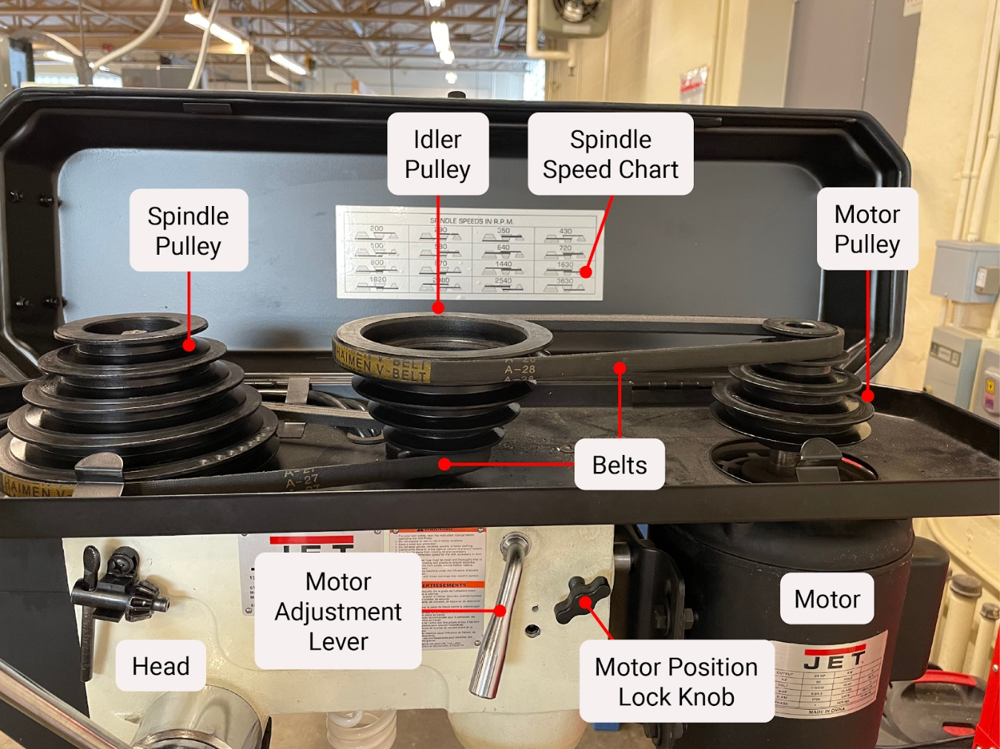
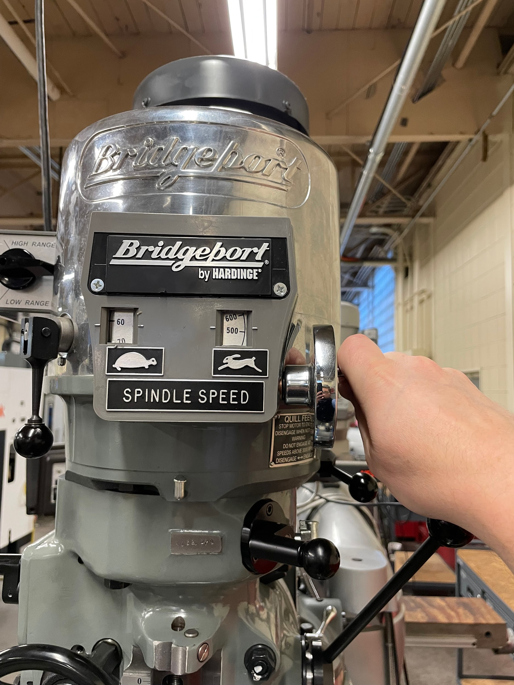

I was watching machining video recently from Adam Booth, in which he attempts a simple job: put a hole into some flat steel bar. It's basic job-shop work but he was using it as a learning experience for computer-controlled (CNC) machining, which he is not used to. It didn't go very well, and to his credit he posted the video with his mistakes.
In this video, he attempts to use a massive drill bit (over 1" diameter) in a CNC milling machine to go from completely unbroken steel to a close-to-sized hole. (For those unaware, you can think of a milling machine as a very large, beefed-up drill press that can also travel in lateral directions, not just up and down.) He is unsure if this will work at all, and indeed, it does not. The interesting part here is that this likely would have worked if he had done the operation on one of his manual milling machines. The reason it doesn't work on his fancy computer-controlled machine is extremely interesting and represents an example of technological advancement not always leading to better outcomes.
When a milling machine, or a drill press, fails to drive a drill bit through a piece of steel, a common problem will be the motor stalling, which is what happened in the video. This happens because the motor does not produce enough power to make the cut. This might come as a bit of a surprise because Adam is using, as far as I can tell from the video, a Milltronics TRM3016 or larger model which comes with a motor that is at least 10 horsepower. That's a lot of power! If he were to put that drill bit into one of his manual machines, it's likely that said machine would only have a 3 horsepower motor. Despite only having 3/10ths the power of the CNC machine, they would likely be able to make the cut just fine.
But wait. Only 3/10ths the power, but would be powerful enough to make the cut when the 10 horsepower motor failed it? What sort of magic makes that work? We have to talk about speed control.
If you've ever operated a drill press before and opened it up at the head, you'd see an array of pulleys with a belt connecting them. Even very cheap drill presses have this. Here's an example from the Washington Open Proftech book "Introduction to Machining", which shows all the parts:
This clever little arrangement of belts and pulleys allows the operator to transform the speed of the motor, which is roughly constant, to a more convenient speed for the drill bit to do the job at hand. For drilling into steel this involves reducing the speed enormously, from roughly 3600 RPM from the motor into something like 250 RPM at the drill bit. Making the change is somewhat inconvenient since you have to pop open the machine head, slacken and move multiple belts, and re-tension everything once you're done. As a result it's best to drill a bunch of similar holes at once so you can minimize the number of times you have to do that.
So, now we've transformed the motor from 3600 RPM to 250 RPM, or roughly stepped it down about 14:1. The fascinating thing about doing it with belts and pulleys (or equivalently with gears) is that the motor is still running at 3600 RPM. That means it's still going to produce its fully rated power, even though that power is being brought to bear by the drill bit running much slower! From your physics class, you might remember that the power of a rotating system is equal to its rate of rotation multiplied by its torque. Our power is constant, and the rate of rotation has dropped by about 14x, so that means the torque at the bit has gone up by 14x! Remember that, it's going to be important later.
Not to put too fine a point on it, but belts and gears suck to use. They're inconvenient to change all the time, and they lock you into a few discrete speeds. Wouldn't it be great if there was a way to get the speeds you want without having to change all these belts and pulleys? It turns out, there is.
Some machines come with what's known as a variable-speed head. Whoever first invented this was an absolute genius truly deserving of the word. This is an ungodly contraption of belts and pulleys shaped like cones, designed so that you tilt a plate and it makes a belt ride up and down to set an approximate speed. It's complicated as hell, it's heavy, and it works beautifully. You can see all the individual parts and how they work together in this video by Watch Wes Work where he takes apart and repairs such a head.
These heads are not so common anymore. They aren't used in computer controlled machines at all because the speed readout is somewhat approximate and not constant. Still, they work great for manual machines and just like with the belts-and-pulleys assembly (because it basically is a belts-and-pulleys assembly) the motor is able to bring its full power to bear at any given speed.
Computer controlled machines use what's known as electronic variable speed control. As the name "electronic" implies, there's no belts or knobs involved here. Instead a device known as a variable-frequency drive which is capable of changing the speed of an AC motor by varying the frequency of the electricity applied to it. This is extraordinarily convenient for computer control! It can be done entirely with software talking to solid-state hardware. The speeds themselves can be controlled extremely finely, down to the RPM. It's an ideal system for when you need to tell a drill bit exactly how fast it needs to be turning. Well...almost.
Remember how in those mechanical systems we discussed above, the motor was always running at its full rate, and somewhere between the motor and the drill bit we stepped the speed down to the desired number? That is not how it works with electronic control. Instead it changes the speed of the motor directly. That has massive consequences and, if you happen to ever go shopping for CNC machines, will explain why you see motors sized the way they are.
When you reduce the speed of a motor with a variable-frequency drive, the torque remains constant. Previously, when we took our drill bit from 3600 RPM to 250 RPM, the speed went down roughly 14x but the bit's torque went up 14x to compensate. With an electronic control reducing our speed, on the other hand, the speed still goes down roughly 14x but the torque remains the same! That means that the overall power available at the drill bit doing the cutting is 1/14th the original power of the motor! That 10 horsepower motor that the machine came equipped with can now only put out a piddling 0.71 horsepower! We're never getting through steel with a 1" diameter drill bit with that! That cut that Adam was trying to make with his Milltronic machine was a failure from the start.
This is why CNC machines come standard with such enormously overpowered motors compared to manual machines. In order to make reasonable power at slower speeds, the motors must be ridiculously oversized to still put out enough power at lower speeds. Coincidentally, this is why you should also avoid buying products like variable-speed drill presses. They just won't have the power to do anything reasonable at slow speeds.
Advanced tech isn't always better ("Pareto Optimal" if you're a nerd like me). Sometimes the older ways of doing something have a particular advantage. That advantage might be forgotten about in the relentless march of time and technology, but sometimes we run into problems with the new way that wouldn't exist in the old way because of how the old way had solved it. Electronic speed control is a fantastic technology that powers most of modern machining, but it can lead us to make errors in judgment because of new trade-offs that we didn't have to think about before.
When I was drafting this post, I was discussing it with my wife and she wondered about how this works on her FlexShaft™. A FlexShaft™ is a rotating tool you hold in your hand, kind of like a Dremel™, attached by a cord to a motor with its speed controlled by a foot pedal. Far older than any of the other machines discussed, are sewing machines. A sewing machine's speed is similarly controlled by a foot pedal. While the machines we've been talking about above use AC motors, both FlexShafts™ and sewing machines tend to use DC motors. Foot pedal control uses a potentiometer (or something electronically similar) to change the applied voltage to the motor, which reduces its speed. Since the speed is reduced at the motor, it doesn't gain any torque from doing this, so they have the same issues as variable-frequency drives with AC motors.